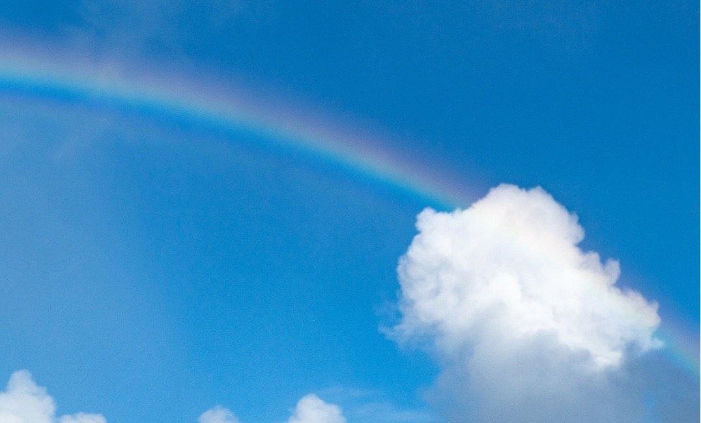

2027年4月本格スタートに向けて準備中です

About
凸凹才能ISM.について
家庭のこと、学校のこと、働くこと、自分自身のこと。
発達の凸凹について知り、交流できる場所です。診断の有無にかかわらず、一人ひとりのありのままを大切にします。
Works
知る。学ぶ。つながる。
Profile
はじめまして。あんです。
発達の凸凹がある人たちの支援に取り組み、家庭や学校で使える工夫を発信しています。
プライベートでは、３人の子育てに奮闘中です。
1%の工夫と、99%のありのまま。凸も凹も、ありのままで才能。
つながる場所。
本人、ご家族、先生、支援者。
それぞれの立場から交流できるコミュニティです。
Contact
お問い合わせ
ホームページやコミュニティについてのご連絡は、メールでお願いします。
メールを送る ↗
メールアドレス：dekoboko.ism@gmail.com
緊急時の相談先：命の危険があるときは警察110・救急119、虐待の心配は児童相談所189